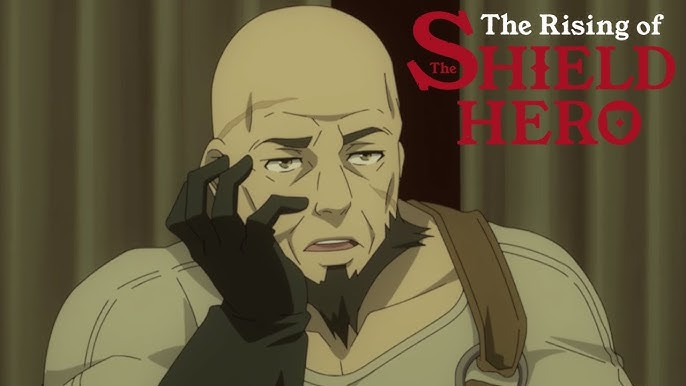

Rapthalia

Filo

Heroe de la espada

Heroe del la lanza

Heroe del arco
Me da gusto que estes viendo la pagina que he creado para este proyecto que la verdad para ser franco me esta llamando mucho la atención pues nunca habia creado en videojuego, como nacio este proyecto por si se lo preguntan PROJECT SHIELD nacio por una simple platica con mis primos por la noche donde de la nada comentarón que como yo estoy estudiando Desarrollo de Software y que deberia crear un videojuego de historias sobre nosotros y despues pasamos a otro tema pero yo me quede con la idea de crear ese videojuego pero con un enfoque diferente.
¿Porque uno referente a Shield Heroe? la respuesta es porque no he visto juegos de este como yo lo tengo pensado hacer ademas porque desde la primera vez que vi el anime me identifique y quede bastante conmosionado por la historia pues me gusto el Aura del protagonista y como este se desenvuelve en el anime por ejemplo en comercio, negociación, respeto, liderazgo etc.

Este proyecto lo estoy creando en Unity pues al investigar más sobre el mundo de la creación de videojuegos muchos mencionaban que
era la mejor opción para iniciar gracias a su comunidad bastante grande y su simplicidad.
Aunque ha sido algo dificil pues al conocer por primera ves esta herramienta la regue mucho, mo costaba moverme con la camara
aunque despues de ver tutoriales que enconte en Youtube lo puede resolver,
Las mecanicas de este videojuego son bastantes simples pues Naofumi Iwatani(El heroe del escudo) tendra que subir de nivel para desbloquear nuevas hablidades en el arbol de su escudo, por el momento solo se contara con un capitulo que lo denomine "A las afueras de Belromack" y con algunas acciones para Naofimi como;


Mi Canal para aprender guitarra
Mi Canal Vlog
